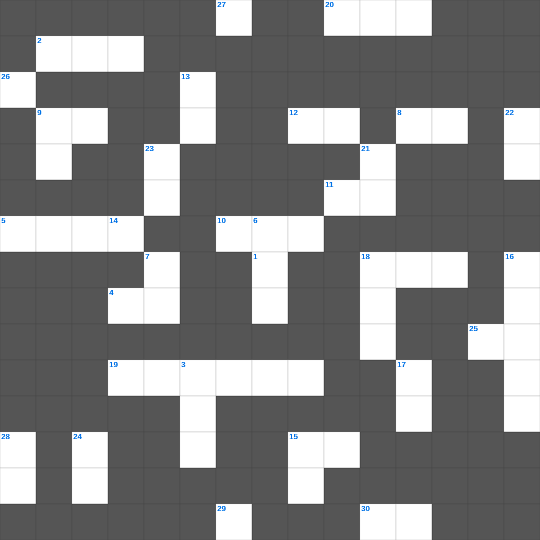

역대하 마스터 100
📌 서비스 정의
십자가로세로는 교회 주보와 주일학교에서 사용할 수 있는 성경 기반 가로세로 퍼즐 서비스입니다. 성경 인물, 사건, 핵심 구절을 바탕으로 제작되었습니다. 온라인 풀이 및 인쇄 기능을 제공합니다.
📖 역대하란?
역대하는 솔로몬의 성전 건축부터 남유다 왕들의 역사, 그리고 바벨론 포로와 귀환 직전까지를 신앙적 관점에서 기록합니다.
📚 역대하의 주요 사건·주제
솔로몬의 성전 봉헌 · 왕국의 분열과 남유다 역사 · 히스기야의 종교개혁 · 요시야의 성전 수리와 개혁 · 바벨론 포로와 귀환 조서
역대하의 말씀을 퀴즈로 배우는 역대하 성경 퍼즐입니다. 가로 힌트와 세로 힌트를 보고 35개의 단어를 맞춰보세요. 인쇄도 가능하고 정답 확인도 바로 되니 소그룹 모임이나 가정 예배 시간에도 활용하실 수 있습니다.

📝 가로 힌트
1. 예수를 십자가에 못 박은 시간 (유대 시간 제 이것 시)
2. 사람이 여러 해를 살면 항상 이것 할지로다
3. 나발의 아내로 지혜롭게 다윗을 말린 여인
4. 하나님은 외모를 보지 않고 이것을 보시느니라
5. 너희는 사도들과 선지자들의 터 위에 세우심을 입은 자라 그리스도 예수께서 친히 이것이 되셨느니라
8. 사무엘을 키운 엘리 제사장의 두 아들 중 하나
9. 베드로후서 1장 10절: 부르심과 택하심을 굳게 하면 어떻게 되지 않나
10. 정탐꾼들이 정탐한 기간
11. 여리고 성을 무너뜨리기 위해 매일 한 번씩 성을 이것함
12. 무엇보다도 뜨겁게 서로 이것할지니 이것은 허다한 죄를 덮느니라
15. 유대인이나 헬라인이나 종이나 자유인이나 남자나 여자나 다 그리스도 예수 안에서 이것이니라
18. 바울의 선교 동역자, 위로의 아들
19. 여호수아의 원래 이름
20. 예수님께 향유 옥합을 깨뜨린 여인(베다니)
25. 무익하나마 내가 부득불 자랑하노니 주의 환상과 이것을 말하리라
29. 재판이나 계량할 때 속이지 말아야 할 것 '공평한 이것'
30. 요한삼서의 장 수
📝 세로 힌트
3. 아브라함의 원래 이름
6. 솔로몬이 궁전을 건축하는 데 걸린 기간
7. 하나님의 뜻대로 하는 이것은 후회할 것이 없는 구원에 이르게 하는 회개를 이루는 것이요
9. 베냐민 지파가 멸절 위기에서 아내를 얻은 장소
13. 하나님을 사랑하는 자는 그 이것을 지키느니라
14. 바울과 바나바를 신으로 오해했던 루스드라 사람들이 바울에게 던진 것
15. 바울의 시민권은 로마에도 있었지만 진짜는 어디에 있다고 했는가
16. 주 앞에서 낮추라 그리하면 주께서 너희를 이것하시리라
17. 바울이 자기 때에 전도로 나타내신 것
18. 언어가 혼잡해져 사람들이 흩어지게 된 탑
21. 사람이 의롭게 되는 것은 율법의 행위로 말미암음이 아니요 오직 예수 그리스도를 이것으로 말미암는 줄 알므로
21. 전신갑주: 모든 것 위에 이것의 방패를 가지고 이로써 능히 악한 자의 모든 불화살을 소멸하고
22. 요한계시록을 기록한 사도
23. 기드온이 승리 후 만든 금 이것이 이스라엘의 올무가 됨
24. 너희는 다시 무서워하는 종의 영을 받지 아니하고 이것의 영을 받았으므로 우리가 아빠 아버지라고 부르짖느니라
26. 하나님께 나아가는 자는 반드시 그가 계신 것과 또한 그가 자기를 찾는 자들에게 이것 주시는 이심을 믿어야 할지니라
27. 새 언약의 일꾼은 율법 조문으로 하지 아니하고 오직 이것으로 함이니
28. 성막의 성물을 어깨에 메고 운반한 레위의 자손
🧩 이 퍼즐에서 배우는 내용
이 퍼즐은 역대하 마스터 100의 핵심 단어와 개념을 자연스럽게 복습할 수 있도록 구성되었습니다. 주일학교 수업이나 개인 성경공부에서 학습 내용을 점검하는 용도로 바로 활용할 수 있습니다.
🧑🏫 교회 교육 자료 활용
이 퍼즐은 주일학교 교재 추천 자료로 활용할 수 있고, 주일학교 주보에 넣기 좋은 분량으로 구성되어 있습니다. 수업용 주일학교 교안에 활동지로 붙이거나, 예배 후 복습용 주일학교 공과교재로 바로 사용할 수 있습니다.
🏷️ 키워드
역대하 성경 퍼즐, 역대하, 십자가로세로, 성경퀴즈, 말씀퀴즈, 가로세로퍼즐, 주일학교 교재 추천, 주일학교 주보, 주일학교 교안, 주일학교 공과교재